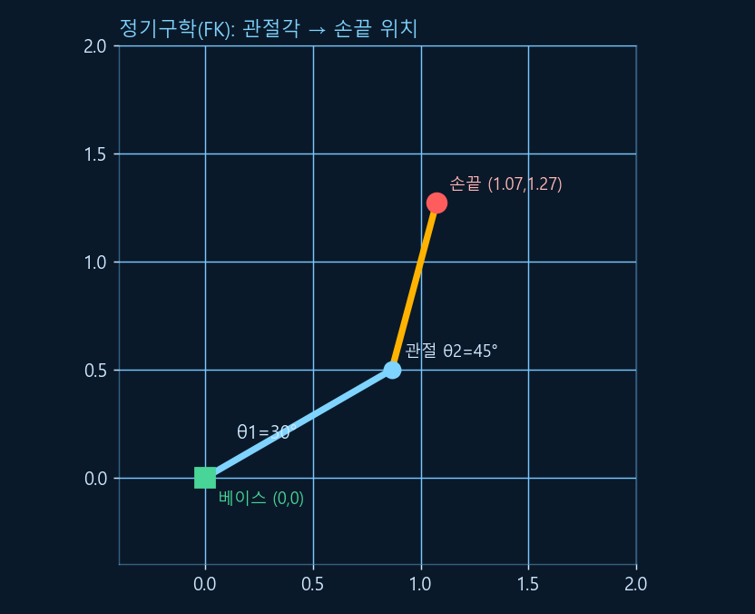
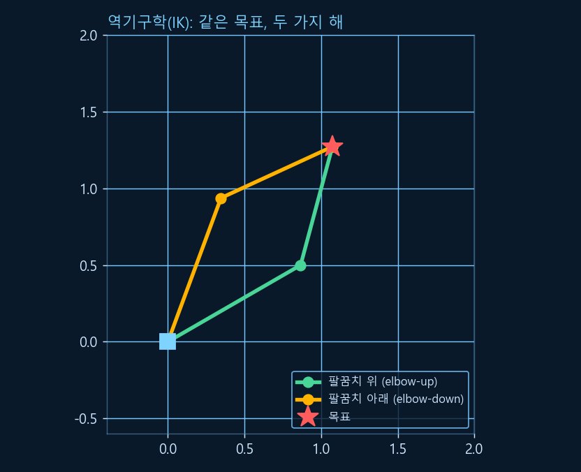
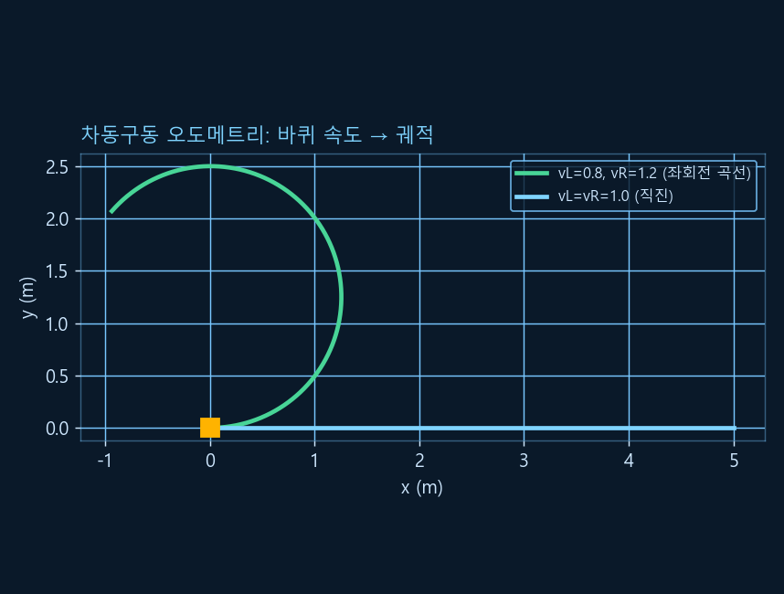

Chapter R4: 키네매틱스 (기구학)
"모터를 이만큼 돌리면 팔 끝이 어디로 갈까?" 그 반대로 "팔 끝을 저기로 보내려면 각 관절을 몇 도 돌려야 할까?" — 이것이 키네매틱스(기구학)입니다. 2링크 로봇팔로 정기구학(FK)·역기구학(IK)·자코비안을, 그리고 차동구동 모바일 로봇의 오도메트리를 numpy로 직접 풀어 봅니다. (R0의 삼각함수·atan2·행렬, R1의 좌표변환이 여기서 빛을 발합니다. 모든 코드는 실행 검증했고, 특히 FK→IK→FK 왕복이 정확히 맞는지 확인합니다.)
1. 키네매틱스란? — 관절 공간 ↔ 작업 공간
로봇은 관절(joint)을 돌려 움직이지만, 우리가 원하는 건 손끝(말단, end-effector)이 특정 위치에 가는 것입니다. 이 두 세계를 잇는 수학이 키네매틱스입니다 — 관절 공간(각 관절 각도)과 작업 공간(손끝의 x, y 위치) 사이의 변환.
💡 비유로 이해하기: 굴착기 조종
굴착기 기사는 여러 레버(관절)를 조작해 버킷(손끝)을 원하는 자리로 보냅니다. "레버를 이렇게 당기면 버킷이 어디로 갈까?"가 정기구학(FK), "버킷을 저기 보내려면 레버를 각각 얼마나?"가 역기구학(IK)입니다. 숙련 기사는 머릿속으로 IK를 푸는 셈이죠. 로봇은 이걸 수식으로 정확히 계산합니다.
FK는 늘 답이 하나로 딱 정해지지만(각도를 알면 손끝은 한 곳), IK는 여러 답이 있거나(팔을 굽히는 두 가지 방법) 아예 답이 없을 수도 있습니다(팔이 닿지 않는 곳). 이 차이를 직접 코드로 확인해 봅니다.
2. 정기구학(FK) — 관절각에서 손끝 위치로
2링크 평면 팔을 생각합니다. 링크 길이 L1, L2, 관절 각도 θ1, θ2. 손끝 위치는 삼각함수로 바로 나옵니다(R0의 sin·cos가 여기 쓰입니다).
y = L1·sin(θ1) + L2·sin(θ1+θ2)

import numpy as np
L1, L2 = 1.0, 0.8
def fk(th1, th2):
x = L1*np.cos(th1) + L2*np.cos(th1 + th2)
y = L1*np.sin(th1) + L2*np.sin(th1 + th2)
return np.array([x, y])
print(np.round(fk(np.radians(30), np.radians(45)), 4)) # 손끝 (x, y)✅ 실행 결과 (검증됨)
[1.0731 1.2727]
3. 역기구학(IK) — 손끝 위치에서 관절각으로
이제 거꾸로, 손끝 목표 (x, y)에서 관절각을 구합니다. 코사인 제2법칙(R0의 삼각함수)으로 둘째 관절각 θ2를 먼저 구하고, atan2(R0의 그 함수!)로 θ1을 맞춥니다.
💡 비유로 이해하기: 팔을 굽히는 두 가지 방법
책상 위 컵을 잡을 때, 팔꿈치를 위로 올려서도, 아래로 내려서도 같은 컵에 닿을 수 있습니다. 그래서 IK는 보통 두 개의 해(elbow-up / elbow-down)를 가집니다. 로봇은 장애물·관절 한계를 보고 둘 중 하나를 고릅니다.

import numpy as np
L1, L2 = 1.0, 0.8
def ik(x, y, elbow_up=True):
# 1) 코사인 제2법칙으로 둘째 관절각 θ2
c2 = (x*x + y*y - L1**2 - L2**2) / (2*L1*L2)
c2 = np.clip(c2, -1, 1) # 수치 안전(±1 범위)
s2 = np.sqrt(1 - c2**2) * (1 if elbow_up else -1) # 두 부호 = 두 해
th2 = np.arctan2(s2, c2)
# 2) atan2로 첫째 관절각 θ1
th1 = np.arctan2(y, x) - np.arctan2(L2*np.sin(th2), L1 + L2*np.cos(th2))
return np.degrees(th1), np.degrees(th2)
target = fk(np.radians(30), np.radians(45)) # 앞서 FK로 만든 손끝
print("elbow-up: ", np.round(ik(target[0], target[1], True), 2))
print("elbow-down:", np.round(ik(target[0], target[1], False), 2))✅ 실행 결과 (검증됨 — FK→IK 왕복)
elbow-up: [30. 45.] elbow-down: [ 69.73 -45. ]
✔️ elbow-up이 원래 각도(30°, 45°)를 정확히 되찾았습니다 — FK로 만든 점을 IK가 그대로 역추적했다는 뜻(왕복 검증). elbow-down은 다른 각도지만 손끝은 같은 위치입니다.
4. DH 파라미터 — 복잡한 로봇을 표준으로 기술
2링크는 손으로 풀 수 있지만, 6축 로봇팔은 어떻게 체계적으로 기술할까요? Denavit-Hartenberg(DH) 파라미터는 각 링크를 단 4개의 숫자로 표준화해 적습니다. 그러면 R1에서 배운 동차변환행렬을 링크마다 하나씩 만들어 곱으로 이어 붙이면(R1의 프레임 합성!) 전체 FK가 완성됩니다.
| 파라미터 | 의미 |
|---|---|
| a (링크 길이) | 이웃한 두 관절축 사이의 거리 |
| α (링크 비틀림) | 이웃한 두 관절축 사이의 각도 |
| d (링크 오프셋) | 축 방향으로의 거리 |
| θ (관절각) | 관절이 돌린 각도(회전 관절이면 이게 변수) |
핵심만 기억하세요: "각 링크 = 4개 파라미터 = 변환행렬 하나, 다 곱하면 FK". 우리가 2절에서 손으로 푼 2링크 FK가 바로 DH의 특수한 경우입니다. (표기법에 classic DH와 modified DH 두 관습이 있어, 책마다 순서가 조금 다를 수 있습니다 — 한 가지로 통일해 쓰면 됩니다.)
5. 자코비안 — 관절 속도에서 손끝 속도로
FK가 "각도 → 위치"라면, 자코비안(Jacobian) J는 그것의 속도 버전입니다 — "관절이 도는 속도(θ̇)"를 "손끝이 움직이는 속도(ẋ)"로 바꿉니다: ẋ = J · θ̇. 즉 J는 FK를 미분한 행렬(R0의 미분 + 행렬)입니다.
💡 비유로 이해하기: 환율표
자코비안은 "관절 속도 → 손끝 속도" 환율표입니다. 각 관절을 1만큼 더 빨리 돌리면 손끝이 어느 방향으로 얼마나 빨라지는지를 알려주죠. 로봇이 "손끝을 이 방향으로 부드럽게 움직여라"는 명령을 관절 속도로 번역할 때 씁니다.
import numpy as np
L1, L2 = 1.0, 0.8
def jacobian(th1, th2):
s1, s12 = np.sin(th1), np.sin(th1 + th2)
c1, c12 = np.cos(th1), np.cos(th1 + th2)
return np.array([[-L1*s1 - L2*s12, -L2*s12],
[ L1*c1 + L2*c12, L2*c12]])
J = jacobian(np.radians(30), np.radians(45))
print("J =\n", np.round(J, 4))
print("det(J) =", round(float(np.linalg.det(J)), 4)) # 0이면 특이점!✅ 실행 결과 (검증됨)
J = [[-1.2727 -0.7727] [ 1.0731 0.2071]] det(J) = 0.5657
⚠️ 특이점(Singularity)
det(J) = 0이 되는 자세를 특이점이라 합니다(R0의 행렬식!). 2링크 팔이 완전히 펴진(θ2=0) 순간이 대표적 — 그 방향으로는 손끝을 움직일 수 없어 자유도를 잃고, IK·속도 제어가 불안정해집니다. 로봇 제어에서 특이점을 피하는 건 중요한 주제입니다.
6. 차동구동 모바일 로봇 — 두 바퀴로 움직이기
로봇팔이 아닌 바퀴 로봇의 기구학도 봅니다. 가장 흔한 차동구동(differential drive)은 좌·우 바퀴 속도를 따로 줘서 움직입니다 — 둘이 같으면 직진, 다르면 회전. 바퀴 간격을 L이라 하면:
로봇의 현재 위치 (x, y, θ)를 매 순간 조금씩 갱신(R0의 적분!)하면 "내가 어디 있나"를 추정합니다. 이것이 R2의 엔코더와 만나는 오도메트리(odometry)입니다.
import numpy as np
def diff_drive_step(x, y, th, vl, vr, L, dt):
v = (vr + vl) / 2 # 선속도 = 두 바퀴 평균
w = (vr - vl) / L # 각속도 = 속도 차 / 바퀴 간격
x += v * np.cos(th) * dt # 위치·방향을 dt만큼 적분
y += v * np.sin(th) * dt
th += w * dt
return x, y, th
# 좌회전 곡선: 오른쪽 바퀴가 더 빠름 (vl=0.8, vr=1.2), 간격 0.5m, 5초
x, y, th = 0.0, 0.0, 0.0
for _ in range(500):
x, y, th = diff_drive_step(x, y, th, 0.8, 1.2, 0.5, 0.01)
print("최종 위치:", round(x, 3), round(y, 3), " 방향(rad):", round(th, 3))✅ 실행 결과 (검증됨)
최종 위치: -0.938 2.071 방향(rad): 4.0

⚠️ 오도메트리는 바퀴 미끄러짐·오차가 쌓입니다(R2 자이로 드리프트처럼). 그래서 LiDAR·IMU와 합쳐 보정하는 게 R9의 SLAM·위치추정입니다.
7. 한 장 요약
| 주제 | 한 줄 정리 | 핵심 공식 |
|---|---|---|
| 정기구학 FK | 관절각 → 손끝 위치 (유일해) | x=L1cosθ1+L2cos(θ1+θ2) |
| 역기구학 IK | 손끝 위치 → 관절각 (보통 2해) | 코사인 법칙 + atan2 |
| DH 파라미터 | 링크를 4개 숫자로 표준 기술 | a, α, d, θ → 변환행렬 곱 |
| 자코비안 J | 관절 속도 → 손끝 속도 | ẋ = J·θ̇, det(J)=0 → 특이점 |
| 차동구동 | 두 바퀴 속도 → 전진·회전 | v=(vR+vL)/2, ω=(vR−vL)/L |
| 오도메트리 | 속도를 적분해 위치 추정 | 오차 누적 → SLAM으로 보정(R9) |
이제 로봇은 감지(R2)하고, 움직이고(R3), "어떻게 움직이면 어디로 가는지"(R4)까지 압니다. 다음 R5(제어·PID)에서는 "목표에 정확히 도달하도록 모터를 실시간으로 조절"하는 법을 배웁니다(곧 공개). 💪